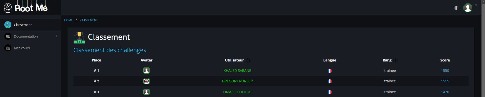

Omar Chouffai
UE3.Cyber.4 – Sécuriser un SI
Découverte des fondamentaux du pentesting et mise en œuvre d’exercices pratiques sur la plateforme Root Me Académique.
SAE3.Cyber.04 – Découvrir le pentesting
Objectifs
- Comprendre la démarche d’audit d’intrusion : reconnaissance, exploitation, post-exploitation.
- Se familiariser avec les outils de base (nmap, hydra, gobuster, Burp Suite, metasploit).
Déroulement
Pendant la SAE, nous avons réalisé :
- 💡 26 challenges Root Me (web, réseau, crypto) pour consolider la méthodologie.
- 🛠️ ateliers guidés : scan réseau, brute-force HTTP, xss & injections SQL.
Résultat
3ᵉ place au classement Root Me Académique : 1 470 pts.

Compétences acquises
- Collecte d’informations et cartographie d’un SI.
- Exploitation de failles courantes (OWASP Top 10).
- Rédaction de comptes-rendus d’audit et recommandations.